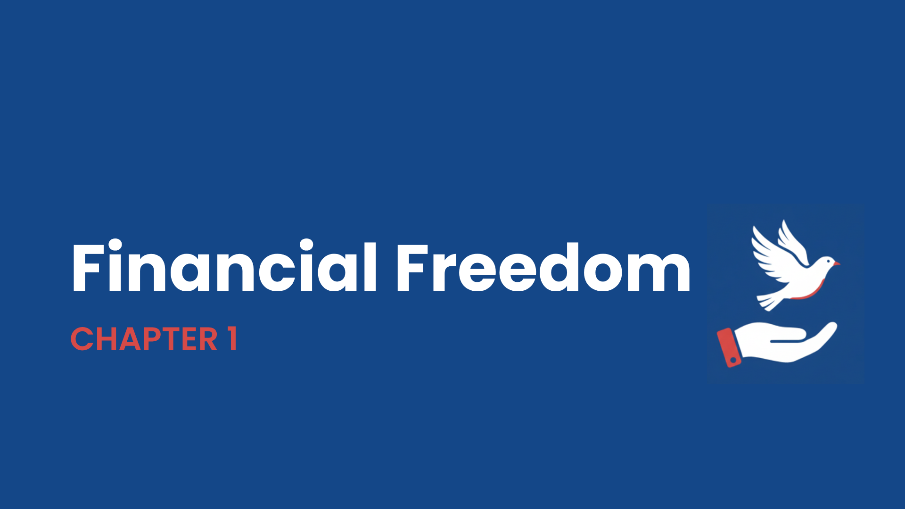
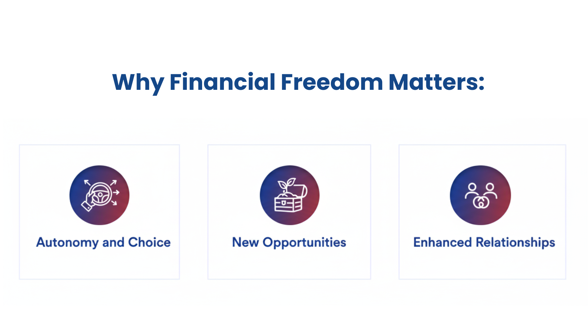
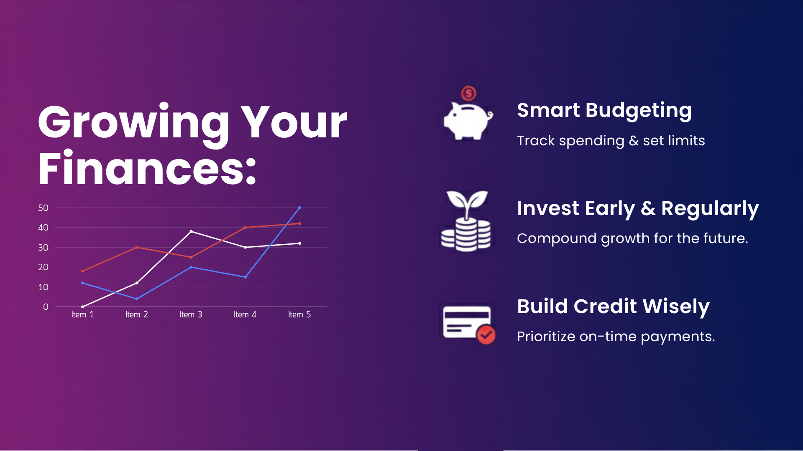

i. Process · Visual Strategy
One master direction that adheres to branding needs.
High-quality, consistent design suited for the target audience.
A master visual direction brief, set in Discovery, governs the full production cycle — colour, typography, motion tone, pacing — with every module reading as one curriculum. Validated against ADGM Academy guidelines and First Abu Dhabi Bank's own visual identity.



Source Script · Module 04
Cash flow is the foundation of any business. Once that is in hand, the analyst turns to the income statement.
Now let's turn to the language of investing — financial statements.
From there, ratio analysis exposes how a company actually performs over time.
ii. Process · Video Design
Translating insights into screen-ready learning.
A line that reads well on paper does not necessarily function visually on the screen.
Each module begins as the bank's source material and ends as something a client can actually retain. The adaptation is small — a clause moved, a metaphor pulled forward, a connective phrase inserted — but it accumulates across the curriculum into something engaging, supportive, and cohesive.
Outcome
VO, motion, and edit — under one visual identity.
The design process delivers more than video content. Each module is carefully calibrated to the learning-journey scheme so it produces actual learning outcomes — with high retention and satisfaction as the intended standard.